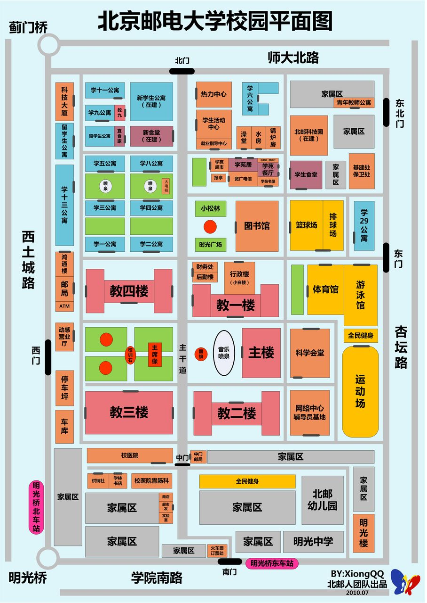

场景说明
从资源池中拖拽以放置基站，部署完毕后拖拽部署业务需求点，对基站部署方案进行验证。
资源池
0/6
删除模式已启用 - 点击基站即可删除

需求点参数
| 类型 | 距离(m) | 业务类型 | 上行速率(Mbps) | 下行速率(Mbps) | 操作 |
|---|
| 最小值 | 最大值 | 平均值 | 中位数 |
|---|---|---|---|
从资源池中拖拽以放置基站，部署完毕后拖拽部署业务需求点，对基站部署方案进行验证。

| 类型 | 距离(m) | 业务类型 | 上行速率(Mbps) | 下行速率(Mbps) | 操作 |
|---|